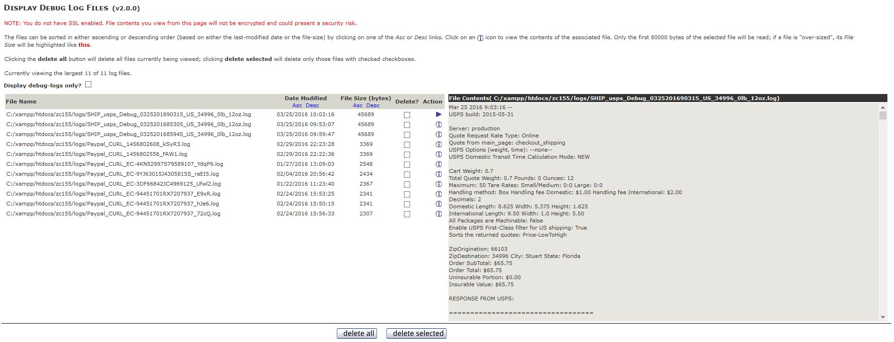

Current Support Thread at Zen Cart Forums: http://www.zen-cart.com/showthread.php?204058-Display-Log-Files-Support-Thread
There have been many times that I've taken a look in one of my Zen Cart's /logs (or /cache for Zen Cart v1.5.0) directories and found some debug log files that I wasn't previously aware of. This plugin allows an admin user to view (and selectively delete) any .log files with names that, starting with v2.1.0, match a set of values configured within Configuration->Logging:
| Field Name | Description |
|---|---|
| Display Logs: Display Maximum | Identifies the maximum number of files that the plugin displays on a page; default: 20. |
| Display Logs: Maximum File Size | Identifies the number of bytes of the currently-selected file to display before truncation; default: 80000. |
| Display Logs: Included File Prefixes | Identifies the filename prefixes to include in the display; all files displayed have a file-extension of .log. The value is a pipe-separated list (|); any intervening spaces are removed prior to the plugin's usage. The default list is myDEBUG-|AIM_Debug_|SIM_Debug_|FirstData_Debug_|Linkpoint_Debug_|Paypal|paypal|ipn_|zcInstall|notifier|usps|SHIP_usps. |
| Display Logs: Excluded File Prefixes | Identifies the filename prefixes to exclude from the display. The value is a pipe-separated list (|); any intervening spaces are removed prior to the plugin's usage. The default value is an empty string. |
The plugin searches only in these directories for the matching log-files:
Once installed, the plugin can be accessed by a signed-in and authorized admin user by selecting Tools->Display Log Files. In addition, starting with v1.0.8, a message is shown in your admin's header if any myDEBUG-*.log files are found in the /logs directory, if defined, or the /cache directory otherwise.
Note: Due to the potentially sensitive nature of the information contained in some of the log files, I suggest that you run your admin in SSL mode if you use this plugin.
The tool allows the logged-in (and authorized) admin user to:
myDEBUG-*.log files.The initial screen for the tool looks similar to:
This section identifies the procedure you'll use to install, upgrade or remove the plugin for your Zen Cart.
There are, starting with v2.0.0, no core-file overwrites required by Display Logs. If you are upgrading the plugin from a version less than v2.0.0, please refer to these instructions.
Rename the YOUR_ADMIN folder to match your Zen Cart admin's folder name and then copy the plugin's files to your store's file-system:
Versions of Display Logs prior to v2.0.0 included a core-file overwrite of /YOUR_ADMIN/includes/header.php. In v2.0.0 and later of the plugin, that processing has been moved so that the core-file overwrite is no longer required!.
If you are upgrading Display Logs to v2.0.0 or later from a v1.x.x version, you'll need to remove the plugin's previous change to that file. Edit that file, find and remove the following code fragment:
//-bof-display_logs-lat9-Incorporate torvista's "log note" *** 1 of 1
// check for debug logs
$path = (defined ('DIR_FS_LOGS')) ? DIR_FS_LOGS : DIR_FS_SQL_CACHE;
$log_files = glob ($path . '/myDEBUG-*.log');
$num_log_files = ($log_files === false) ? 0 : count ($log_files);
unset ($log_files);
if ($num_log_files > 0) {
$messageStack->add ($num_log_files . ' debug-log files exist, click here to view.', 'caution');
}
//-eof-display_logs_lat9 *** 1 of 1 ***
If you don't remove that code fragment, you'll receive two copies of the plugin's notification-message in your admin's header.
First, delete the files that were copied to your zen-cart installation's admin directories. Restore your backup up of then use your admin's Tools->Run SQL Patches to run the file /docs/display_logs/uninstall/display_logs_uninstall.sql.
This section identifies the files added or modified for this plugin as well as the plugin's change history.
The plugin provides the following files in its distribution zip-file.